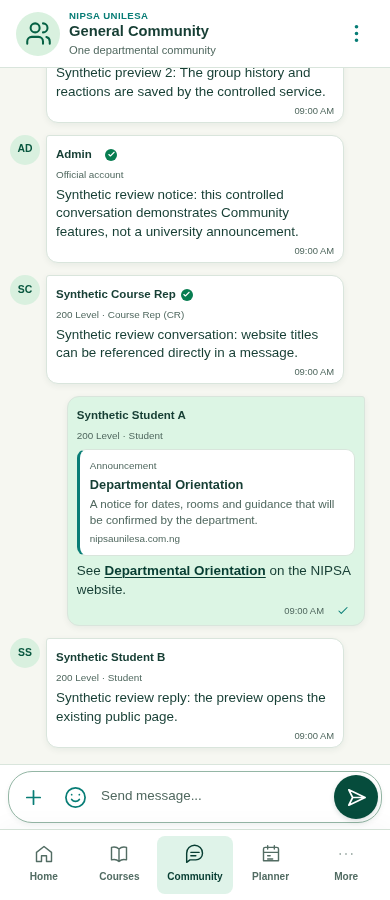
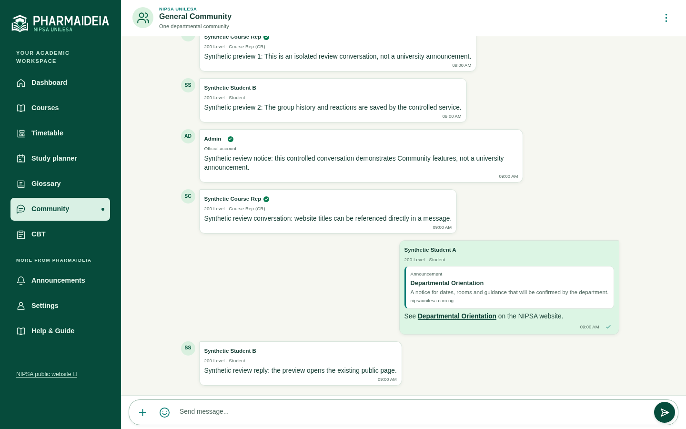
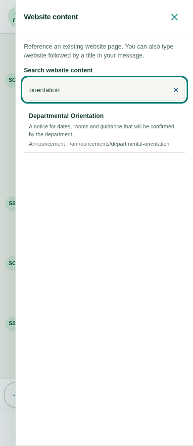
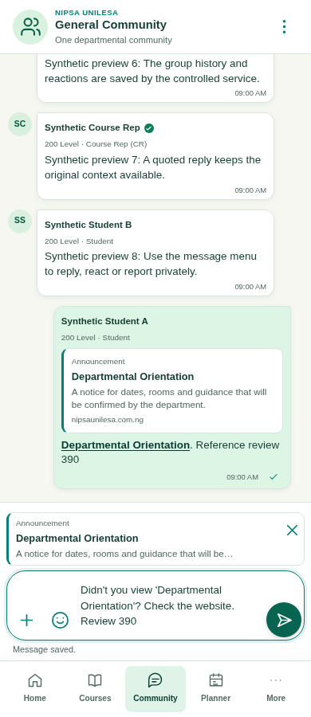
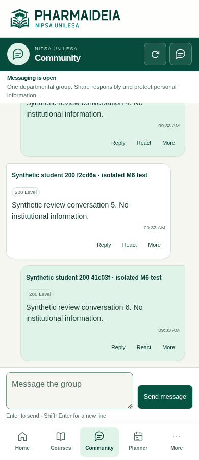
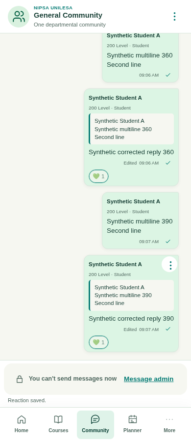
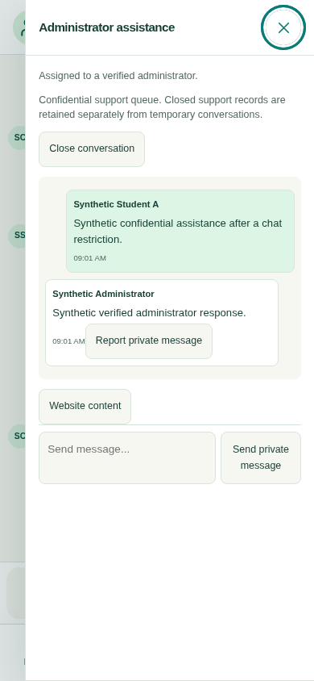

PHARMAIDEIA — M8 Community
Actual controlled application evidence. All accounts and chat content are synthetic review fixtures. Final preview enabled; production unchanged. This gallery is not a running student service.
Enabled preview




Website references


Actual mobile walkthrough
Written transcript. No autoplay; local-file caption support depends on the viewer's file-origin policy. No account credentials are shown.
Before / after, 390px

Restrictions and private assistance


External hosting, provider and live public-feed publication remain unverified. See the milestone/security/pre-launch documents before any public release. No physical-device or accessibility certification is claimed.